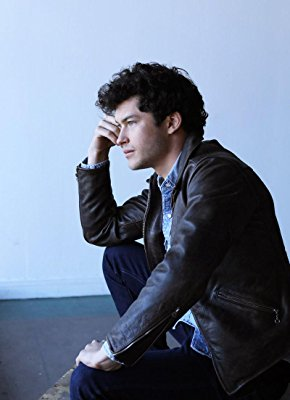
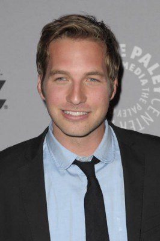
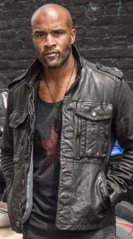
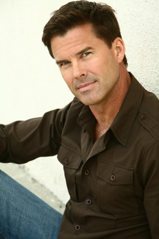

#9674 XOXO

 IMDB-Wertung: 5.3 / 10
IMDB-Wertung: 5.3 / 10  Tomatometer: 71
Tomatometer: 71  Metascore: 0
Metascore: 0 
Mit Xoxo steht die gigantischste Party für Freunde elektronischer Tanzmusik der USA vor der Tür. In einer Nacht treffen sich sechs Fremde, die alle Teil der Partymeute sein wollen. Mitten unter ihnen ist Ethan. Der junge DJ soll plötzlich auf dem Festival auftreten, nachdem seine Songs vor gerade einmal ein paar Tagen zu Internet-Hits geworden sind. Für ihn ist es natürlich die Chance seines Lebens, doch nun scheint sich das Schicksal gegen ihn verschworen zu haben. So scheint es für Ethan unmöglich, überhaupt den Schauplatz des Festivals zu erreichen… Doch auch jeder der anderen Festivalbesucher schreibt an diesem Abend seine ganz eigene Geschichte: Ein hoffnungsloser Romantiker will die große Liebe finden, eine ehemalige Szene-Größe hofft auf die Rückkehr ins Rampenlicht und ein Pärchen gerät in Versuchung.
Jahr: 2016
Dauer: 92 Minuten
FSK: 12
Land: USA Studio: NetflixTonspuren: - , - , - , - , - ,
Untertitel: Deutsch, Englisch,
Auflösung: 1080p (1920x1080) Größe: 4167 MB
Genre: Drama, Musik
Regisseur: Christopher Louie
Drehbuch: Christopher Louie, Dylan Meyer
Soundtrack: Aaron Drake
Darsteller:
- Sarah Hyland als Krystal
-  Graham Phillips als Ethan
- Brett DelBuono als Tariq
- Hayley Kiyoko als Shannie
- Colin Woodell als Ray
- Chris D'Elia als Neil
- Ian Anthony Dale als Anders
-  Ryan Hansen als Avilo
-  LaMonica Garrett als Chopper
- Brianne Howey als Darla
- Medalion Rahimi als Nikki
- Peter Gilroy als Jayce
- Ione Skye als Ethan's Mom
- Kelly Marie Tran als Butterfly Rave Girl
- Scott Deckert als Drug Guy
- Ludwig Manukian als Mr. Hariri
- Henry Zaga als Jordan
- Christopher Foley als Brock
- Brett Davis als Vince
- Lars Slind als Chad
- Kenajuan Bentley als Joe
- Sean O'Pry als DJ Polaroid
- Joe Russell als Sound Tech
- Cissy Wellman als Hippie Wife
 Taliesin Jaffe als TopHat Raver
Taliesin Jaffe als TopHat Raver-  Laird Macintosh als Mr. Henderson
- Alex Rich als Nice Raver Guy
- Erika T. Johnson als Female Ticket Taker
- Lisa Renée als Coordinator Girl
- Lyssa Roberts als Ethan's Girl
- Keelin Woodell als Cuddle Puddle Girl
- Gentry White als Top Hat Raver
- Joshua Berduo als Kid in Line
- Casey Strand als Secretary
- Daniel Shafer als Veteran Raver
- Jenko Childs als Security Guard #3
- Marci Miller als Alien Girl
- Julien Ari als Neon Tanktop Guy
- Nicholas Oteri als Ethan's Brother
- Lindsey Apple als Raver (uncredited)
- Jacqueline Besson als VIP Rave Guest (uncredited)
- Karri Davis als Raver (uncredited)
- Pamela Keith als Ethan's Grandma (uncredited)
- Alison Kohlhardt als Crying Raver (uncredited)
- Christopher Louie als Artist (uncredited)
- Maxx Maulion als Voice Actor (uncredited)
- David Jason Perez als Mohawk Raver (uncredited)
- Parker Phillips als Aaron (uncredited)
- Wolfie Trausch als Voice Actor (uncredited)
- Sam Aotaki als Chelsea
Datei: X:\2016(N-Z)\XOXO (2016, FSK12, 1920x1080).mkv seit 02.10.2018
Festplatte: HD 2016(A-Z)
 Es gibt insgesamt 182 Filme in der Gruppe '2016(N-Z)'
Es gibt insgesamt 182 Filme in der Gruppe '2016(N-Z)'